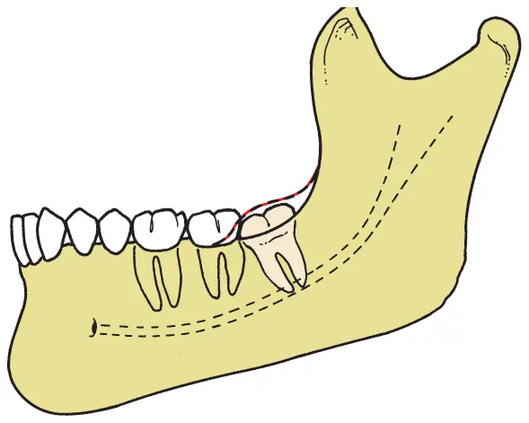
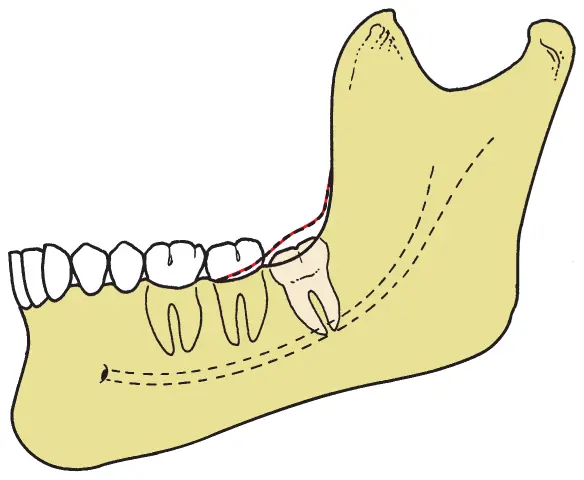

نسخه استخراجشده؛ ترجمه یا تأیید علمی انجام نشده است. وضعیت: captured
جملهای که کل این یونیت را جمع میکند: عامل اصلی تعیینکنندهی سختی برداشتن، دسترسی است. و دسترسی را دندانهای مجاور یا ساختارهای دیگری تعیین میکنند که مانع دسترسی یا مسیر تحویل دندان میشوند.

دسترسی سه بخش دارد که هر سه باید جدا سنجیده شوند: سهولت نمایان کردن دندان، آماده کردن مسیر تحویل، و آماده کردن purchase point.
برداشتن دندان نهفته میتواند نسبتاً سرراست یا بهشدت دشوار، حتی برای جراح باتجربه باشد. برای تعیین درجهی سختی پیش از عمل، جراح باید شرایط بالینی را روشمند بررسی کند. با طبقهبندی دقیق نهفتگی با چند سیستم، جراح میتواند جراحی را روشمند پیش ببرد و پیشبینی کند که آیا رویکردهای جراحی غیرمعمول لازم میشود یا بیمار با مشکلات مشخصی پس از عمل روبهرو خواهد شد.
تصویربرداری. اکثریت طرحهای طبقهبندی بر پایهی تحلیل یک رادیوگرافیاند.
و دو مرز حرفهای که باید بشناسی: جراح باید همهی عوامل را تحلیل کند و نهفتههایی را دربیاورد که در سطح مهارت خودش هستند. ولی برای سلامت بیمار و آرامش خاطر خود دندانپزشک، بیمار باید به متخصص ارجاع شود اگر دندان وضعیت جراحی دشواری دارد، یا اگر دندانپزشک نمیتواند کنترل بهینهی درد و اضطراب حین عمل را فراهم کند.
پرکاربردترین سیستم طبقهبندی در طرح درمان، بر پایهی زاویهی محور طولی مولر سوم نسبت به محور طولی مولر دوم مجاور است.

منطقش مکانیکی است: دندانها در بعضی زوایا مسیر تحویل از پیش آماده دارند، در حالی که مسیر دندانها در زوایای دیگر به برداشت مقدار قابلتوجهی استخوان یا تقسیم دندان یا هر دو نیاز دارد.
و یک قید مهم: این سیستم ارزیابی اولیهی مفیدی از سختی میدهد، ولی بهتنهایی برای تعریف کامل سختی برداشتن مولر کافی نیست.
۱) مزیوانگولار — کمدشوارترین. تاج دندان نهفته به سمت مولر دوم و در جهت مزیال تیلت دارد. این کمدشوارترین نهفتگی برای برداشتن است، بهویژه وقتی تنها نیمهنهفته باشد. و شایعترین نوع هم هست: حدود ۴۳٪ از کل مولرهای سوم نهفتهی پایین.
۲) افقی. وقتی محور طولی مولر سوم عمود بر محور طولی مولر دوم باشد. معمولاً دشوارتر از مزیوانگولار در نظر گرفته میشود. شیوعش کمتر است: حدود ۳٪ از کل نهفتگیهای مندیبل.
و خطر ویژهی نهفتگی افقی: سطح اکلوزال دندان نهفتهی افقی معمولاً بلافاصله مجاور ریشهی مولر دوم است، که اغلب بیماری پریودنتال شدید و زودرس ایجاد میکند.